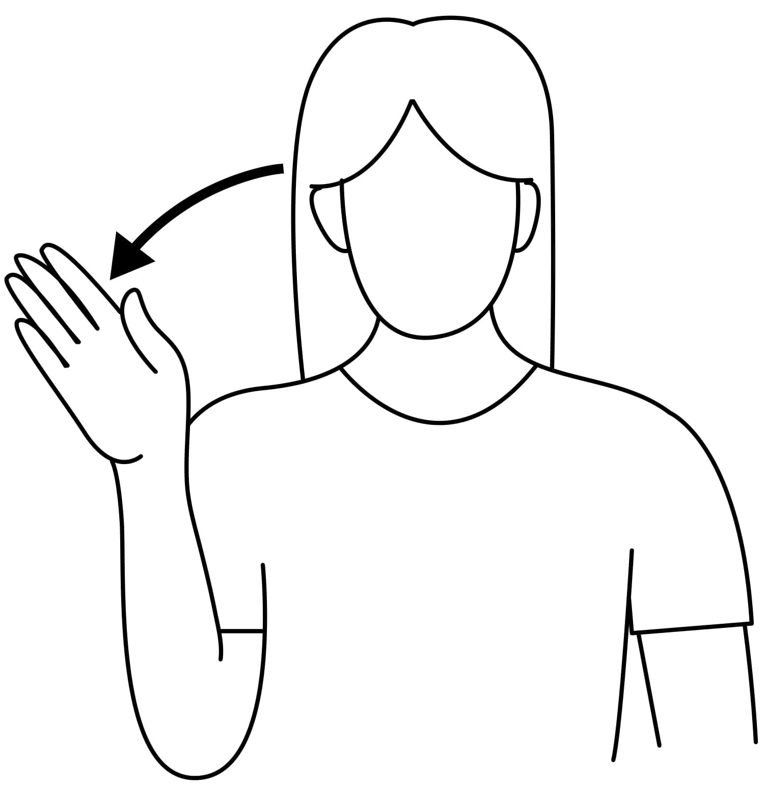
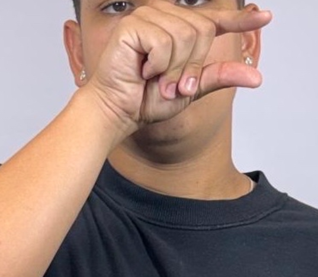
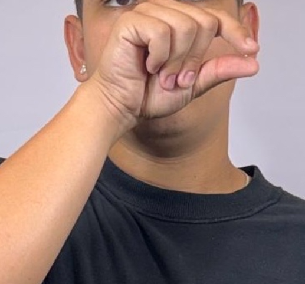

PROPOSTA DE ENSINO PARA ALUNOS SURDOS
Trabalho desenvolvido para a feira de projetos do Senac Pindamonhangaba.
Orientação: Prof. Ma. Iara Diniz de Souza,
Bruno Ribeiro Santos, Joana Carvalho Bäenninger Vieira de Souza, Luiz Guilherme Nunes da Silva, Lukas Gomes do Carmo, Nicolas Evaristo Martins

Números
Nesta fase, o objetivo principal é que a criança associe o sinal da mão à quantidade correta e ao símbolo numérico.
Apresentação Sequencial com Quantidade: Introduza cada número na sequência. Ao sinalizar o número 3, mostre simultaneamente três objetos e o símbolo numérico "3" escrito.
Repetição e Contagem: Sinalize o número e peça que a criança conte os objetos. Em seguida, diga o nome do número e peça que a criança sinalize a quantidade e pegue o número correspondente de objetos.
Consolidação e Prática
Com o reconhecimento da quantidade, o foco é na ordenação dos números e na capacidade de recuperá-los rapidamente. Pratique a contagem do 0 ao 10, pedindo à criança para sinalizar cada número na ordem correta, sem pausas. Isso constrói o conceito de sequência. Use também jogos rápidos onde a criança deve sinalizar um número aleatoriamente ou, inversamente, pegar o símbolo numérico (cartão) correspondente ao sinal que você fizer. Peça à criança para recolher uma quantidade específica de objetos (Ex: "Traga 9 lápis"). A frequência na prática é a chave para o reforço da memória sem causar cansaço.
1 2 3 4 5 6 7 8 9 10

Alfabeto
Nesta fase, o objetivo principal é que a criança reconheça visualmente a forma da letra e comece a criar a primeira associação mental.
Apresentação Lenta e Clara:Comece sinalizando a primeira letra (por exemplo, a letra A) de forma clara e pausada. É crucial que a criança tenha tempo para observar bem o formato da mão antes de tentar a reprodução.
Repetição Guiada:Agora é a vez da criança a repetir o sinal. Mantenha o ritmo lento e, se necessário, ajude a guiar a mão para corrigir o formato. O foco inicial é desenvolver a coordenação motora para a forma correta.
Associação Imediata:Crie uma associação simples e direta. Por exemplo: "Essa é a letra A. A de Abelha."
Reforço Visual:Use cartões ou objetos para apoiar essa conexão. Peça à criança para apontar a letra 'A' no cartão junto com a imagem da "Abelha", fixando a memória visual.
Consolidação e Prática
Com o formato da letra reconhecido, o foco é consolidar e aumentar a fluidez através de atividades lúdicas. Use jogos rápidos onde a criança deve identificar a palavra a partir do sinal, sinalizar a letra a partir da palavra (A de Abelha). A frequência é a chave para o reforço da memória sem causar cansaço.
A B C D E F G H I J K L M N O P Q R S T U V W X Y Z

Cumprimentos
O objetivo final é integrar os sinais de cumprimento nas interações cotidianas, tornando-os ferramentas sociais.
Dramatização de Interações:Crie atividades de simulação, como "Recebendo a Visita". A criança pratica a sequência completa: cumprimentar, perguntar como está e se despedir, usando os sinais de forma coesa.
Uso em Rotinas Diárias:Incentive o uso dos sinais como parte integrante da rotina:
• Sinalizar "Bom Dia" ao ver os colegas ou familiares pela manhã.
• Sinalizar "Até Logo" na hora de ir embora.
Trabalho de Observação:Peça à criança para observar e identificar quando outras pessoas usam os cumprimentos. Isso reforça que o uso dos sinais é uma norma social e um meio de conexão.
O elogio e o incentivo são essenciais em todas as fases para que a criança desenvolva a confiança social necessária para usar a língua de sinais no dia a dia.
BOM DIA
GOOD MORNING

BOA TARDE
GOOD AFTERNOON

COMO VAI VOCÊ?
HOW ARE YOU?

PRAZER EM CONHECER
NICE TO MEET YOU

BOA NOITE
GOOD NIGHT

OLÁ
HELLO

TCHAU
GOOD BYE


Animais
O objetivo é que a criança associe o sinal diretamente ao animal e compreenda uma de suas características principais.
Característica: Apresente o sinal do animal associando-o a uma característica física ou sonora fácil. Para o gato, mostre a forma do sinal e faça o som ou o movimento de seus miados/patas.
Imagens e Brinquedos: Imagens grandes, fotos ou bichos de pelúcia podem reforçar a associação visual.
Repetição e Nomeação: Sinalize e peça para a criança nomeá-lo. Em seguida, peça para a criança sinalizar o animal quando você o nomear. Isso cria a conexão bidirecional
Consolidação e Prática Com os sinais básicos memorizados, o foco se move para a diferenciação e organização dos animais em categorias. Introduza a categorização. Sinalize uma categoria (Ex: "Animal da Fazenda") e aponte aleatoriamente para diferentes figuras de animais. A criança deve sinalizar "SIM" ou "NÃO" (ou balançar a cabeça) para confirmar se o animal pertence àquela categoria.
JACARÉ
ALLIGATOR

BORBOLETA
BUTTERFLY

GOLFINHO
DOLPHIN

GALINHA
CHICKEN


PÁSSARO
BIRD


URSO
BEAR

MORCEGO
BAT

TARTARUGA MARINHA
SEA TURTLE


Cores
O objetivo é que a criança associe o sinal da cor a uma percepção visual e, idealmente, tátil da cor.
Apresentação: Introduza o sinal de cada cor mostrando-o junto com um objeto daquela cor.
Repetição e Nomeação: Sinalize a cor e peça para a criança nomeá-la verbalmente (se possível). Em seguida, diga o nome da cor e peça para a criança fazer o sinal. Esta repetição bidirecional fortalece o elo.
Reforço com Cartões: Utilize cartões de cores puras. Peça à criança para classificar objetos na frente dela, colocando-os sobre o cartão da cor correspondente.
Com o vocabulário das cores memorizado, o foco é diferenciar as cores umas das outras e selecioná-las rapidamente. Espalhe vários objetos de cores diferentes. Diga o nome de uma cor (Ex: "AZUL") e peça para a criança:
• Fazer o sinal da cor AZUL
• Pegar um objeto azul o mais rápido possível.
Outra ideia onde o sinal vem antes, sinalize uma cor e peça para a criança apontar para algo naquela cor na sala. Este exercício exige que a criança recupere o significado visual a partir do sinal.